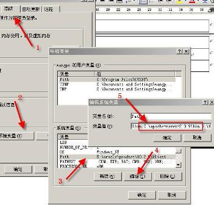
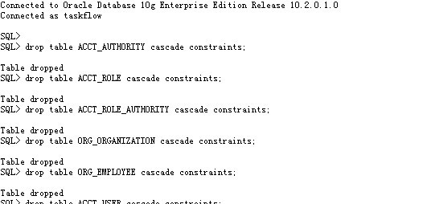
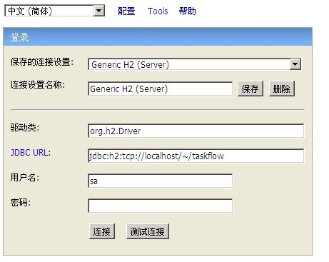
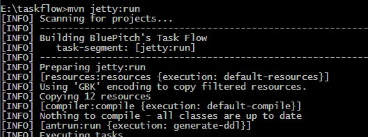
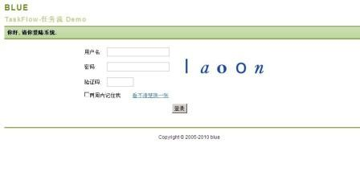

先到官方网站下载Maven2的最新版本：http://maven.apache.org/download.html。本人使用的Maven2版本是2.2.1。下载完以后，将Maven2解压到你所希望的目录即可。当然，Maven2是一个java工具，你必须安装的有JDK1.5及以上才可以正常运行，但是TaskFlow需要JDK6的支持，所以建议你安装JDK6。具体要求如下：
| JDK | 1.5 or above (this is to execute Maven - it still allows you to build against 1.3 and prior JDK's) |
| Memory | No minimum requirement |
| Disk | No minimum requirement. Approximately 100MB will be used for your local repository, however this will vary depending on usage and can be removed and redownloaded at any time. |
| Operating System | No minimum requirement. On Windows, Windows NT and above or Cygwin is required for the startup scripts. Tested on Windows XP, Fedora Core and Mac OS X. |
在Windows操作系统下的安装过程如下：

Win + R然后输入cmd，键入命令“mvn –version”验证安装是否正确。
Maven2的配置文件是C:\apache-maven-2.2.1\conf\settings.xml，一般不必修改即可使用。Maven就像个容器，它的功能由插件来发挥。可以到http://maven.apache.org/plugins/index.html看到它的所有的插件功能。
将/src/main/sql/oracle下的sql导入到数据库中。注意：执行的顺序是 codetable.sql-->schema.sql-->init.sql。目前有Oracle和h2两种选择，你也可以根据自己的情况转成自己需要的sql，但是程序中需要在配置文件和主键生成等地方进行修改。
Oracle相信大家都很熟悉了，我是直接用PLSQL执行sql语句导入的。

对于Oracle还有一个地方需要修改，就是每一个实体类里关于表名的注释都需要加上schema = "你的schema名"，否则会找不到表。（这个问题有时间我会进一步看一下，暂时先这样解决吧。）
H2是一个开源数据库，它小巧而功能齐全，非常适合开发和测试时使用。到www.h2database.com上下载最新版本，然后执行/h2/bin/h2.bat启动H2数据库，会弹出浏览器让你建立数据库链接。JDBC URL中填入jdbc:h2:tcp://localhost/~/taskflow，点击连接进入，然后按顺序执行sql。

导入sql之后，需要修改配置文件。找到/src/main/resources/application.properties文件，修改database settings为你自己的环境。
Maven2安装成功以后，在命令行进入TaskFlow项目所在目录，执行命令mvn jetty:run。在执行过程中，maven会连接网络下载所需要的jar包，所以请耐心等待，并保持网络畅通。执行完成以后，jetty就启动了，你可以在http://localhost:9090/taskflow/中查看了。登录用户是admin密码是admin，也可以用user登录，当然你也可以添加新用户。注意，9090端口不要冲突，否则无法启动。


本人曾编写过一个简单的Maven2入门文档，欢迎下载Maven2快速上手指南。如果有问题可以发邮件给我！